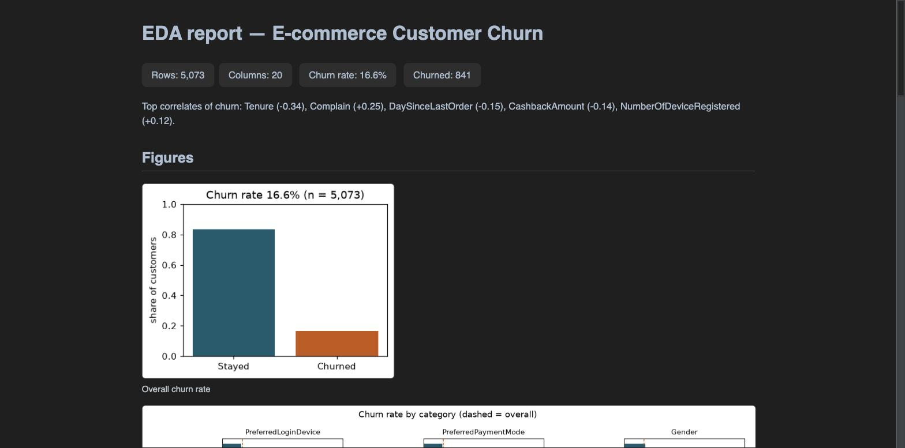

M1: הכלים של צוות 1 — טעינה, ניקוי, EDA
התחנה הזאת בונה את מה שהסוכנים של צוות האנליסטים יקראו לו ככלים ב-M3: קריאת הקובץ הגולמי, ניקוי דטרמיניסטי שמדווח בדיוק מה שינה, וסטטיסטיקה תיאורית עם דוח HTML. בלי סוכנים עדיין. כל מספר בדף הזה הגיע מהפלט של הקוד (cleaning_report.json, stats.json), לא מהזיכרון.
01מה נבנה
hv/ingest.py:load_raw(הגיליון כמו שהוא),load_data_dictionary(מוצא את גיליון המילון לפי תוכן, לא לפי מיקום; הקובץ מאיית "Discerption"),sha256_file,profile(שורות, ריקים, ייחודיים, דוגמאות, כפילויות, טווחים).hv/cleaning.py: רווחים → מפת ישויות → שורות כפולות → מזהים כפולים → רשומות כפולות (D-M1-1, עם דגל) → המרת טיפוסים → מיון. אף פעם לא משלים ריקים. מחזירCleaningReportעם כל מה שהשתנה.hv/eda.py:stats(נטישה לפי קטגוריה, ממוצעים לפי תוצאה, קורלציות, קבוצות ותק, תלונות) →stats.jsonממוין;render_eda_html→ דוח HTML בקובץ אחד, חמישה גרפים מוטמעים, בלי קישורים חיצוניים.scripts/run_crew1_tools.py: מריץ הכל על הקובץ האמיתי ל-artifacts/crew1/(זמני; ב-M3 הסוכנים יחליפו אותו).- 21 בדיקות חדשות (29 בסך הכל) על מסגרת סינתטית של 8 שורות עם כל סוגי הלכלוך: איותים, רווחים, שורה כפולה, זוג רשומות זהות עם מזהה שונה, ריקים.
02מה מצאנו בדאטה
| מדד | גולמי | אחרי ניקוי |
|---|---|---|
| שורות | 5,630 | 5,073 |
| עמודות | 20 | 20 |
| שורות כפולות (זהות לגמרי) | 0 | 0 |
| מזהים כפולים | 0 | 0 |
| רשומות זהות בכל עמודה חוץ מ-CustomerID | 556 | 0 (הוסרו 557) |
| שיעור נטישה | 16.84% (948) | 16.58% (841) |
| ריקים: Tenure / WarehouseToHome / HourSpendOnApp | 264 / 251 / 255 | 231 / 221 / 230 |
| ריקים: OrderAmountHike / CouponUsed / OrderCount / DaySinceLastOrder | 265 / 256 / 258 / 307 | 252 / 210 / 243 / 288 |
תיקוני איות (מפת הישויות)
PreferredLoginDevice: "Phone" → "Mobile Phone" ב-1,231 שורות.PreferredPaymentMode: "CC" → "Credit Card" ב-273, "COD" → "Cash on Delivery" ב-365.PreferedOrderCat: "Mobile" → "Mobile Phone" ב-809.
פרט קטן שמעיד שהצנרת עובדת: בגולמי יש 556 זוגות רשומות זהות, אבל הניקוי הסיר 557. הזוג הנוסף היה זהה בכל דבר חוץ מ-"CC" מול "Credit Card": רק אחרי איחוד האיותים הוא התגלה ככפילות.
מי נוטש (מתוך stats.json)
- ותק הוא הסיפור. לקוחות בותק 0–1 חודשים: 1,076 לקוחות, 51.3% נטישה. ותק 2–6: 7.4%. ותק 7–12: 5.7%. ותק 13+: 5.3%. ממוצע ותק: 3.5 חודשים אצל הנוטשים מול 11.5 אצל הנשארים. קורלציה −0.34.
- תלונה מכפילה פי שלושה. התלוננו בחודש האחרון: 31.3% נטישה; לא התלוננו: 10.8%. קורלציה +0.25.
- קטגוריית הזמנה: טלפונים ניידים 26.3% מול מכולת 4.4% ומחשבים ניידים 10.5%.
- מצב משפחתי: רווקים 26.7%, גרושים 14.6%, נשואים 11.3%. (מאפיין מוגן: לא פיצ'ר, כן בדיקת הוגנות.)
- עיר: דרגה 3: 21.9%, דרגה 1: 14.0%. תשלום: מזומן במשלוח 25.4%, ארנק דיגיטלי 22.8%, כרטיס אשראי 14.2%.
- כסף והתנהגות: קאשבק ממוצע 161.8 אצל הנוטשים מול 180.8; ימים מאז ההזמנה האחרונה 3.3 מול 4.8 (הנוטשים הזמינו לאחרונה יותר קרוב, לא פחות). קופונים: קורלציה אפס.
- חמשת המתאמים החזקים: Tenure (−0.34), Complain (+0.25), DaySinceLastOrder (−0.15), CashbackAmount (−0.14), NumberOfDeviceRegistered (+0.12).

artifacts/crew1/eda_report.html כפי שנפתח בדפדפן. הדוח המלא כולל חמישה גרפים וטבלת סטטיסטיקה תיאורית.03החלטה D-M1-1 (אושרה: A)
556 לקוחות "שונים" עם רשומה זהה לחלוטין
בקובץ יש 556 זוגות שורות שזהות בכל 19 העמודות (כולל Churn, כולל הריקים באותם מקומות), ורק ה-CustomerID שונה. זה לא נראה כמו שני לקוחות אמיתיים; זה נראה כמו שכפול שנעשה כשבנו את הדאטה. הברייף מבקש ניקוי "ראוי", וזו בדיוק ההחלטה שצריך לכתוב ולא לעשות בשקט.
הקוד תומך בשתי האפשרויות בדגל אחד, והבדיקות מכסות את שתיהן. אם תבחר B, אני מריץ מחדש, מעדכן את התוצרים והמספרים בדוח, ורושם ביומן.
04תוצאת השער
| בדיקה | תוצאה |
|---|---|
| pytest ירוק (29 בדיקות) | PASS |
| ruff נקי | PASS |
מספר השורות ב-clean_data.csv תואם לדוח הניקוי, והחשבון סוגר | PASS |
| אפס "Phone" / "CC" / "COD" / "Mobile" בעמודות הממופות | PASS |
הריקים בקובץ שווים בדיוק ל-nulls_kept (שום דבר לא הושלם) | PASS |
שתי ריצות → clean_data.csv ו-stats.json זהים בייט-בייט | PASS |
eda_report.html בלי נכסים חיצוניים; שיעור נטישה סביר | PASS |
GATE M1: PASS 7/7. clean_data.csv: sha256 ef1e1f758009…, 5,073 שורות.
05מה למדנו
- ב-pandas 3 עמודות טקסט הן
strולאobject; זיהוי לפיis_string_dtypeולא לפיselect_dtypes("object"). - קורלציה על עמודה קבועה מייצרת אזהרת numpy; הקוד מדלג על עמודות עם ערך אחד במקום להשתיק אזהרות.
- סדר הניקוי חשוב: מפת הישויות לפני הכפילויות, אחרת כפילות "מוסווית" באיות שורדת.
06סגירה
שני הדברים נסגרו: D-M1-1 אושרה כ-A (להסיר, לשמור את המזהה הנמוך), ו-PR #5 מוזג. M1 סגורה.
הבא, M2: החוזה והמאמת. אם הפרטנר מצטרף ולוקח את מסלול B, זה שלו; אחרת אני ממשיך.